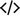

Валентин Алексеевич
- Начинающий программист на Ruby
- Республика Беларусь, Минск
- 39 лет
- тел.: +375 44 777 40 66
- email: ostavnenko.valik@gmail.com
- Github: github.com/Ostavaleo
О CЕБЕ
Привет, меня зовут Валентин, я начинающий Ruby on Rails разработчик. Сменил деятельность в интересную мне область. Пока не располагаю большим опытом, но нахожусь в процессе его приобретения:
В настоящий момент меняю сферу деятельности на интересную мне область программирования и прохожу курс
онлайн-интенсив по Ruby on Rails
 .
.
Во время обучения на курсе научился мыслить как веб-разработчик, создавать новые RoR проекты и вносить новую функциональность в существующие, улучшил навыки поиска информации.
Мне нравится что используя упомянутые технологии и некоторые знания из смежных областей, можно в обозримые сроки создать полноценный продукт. Планирую и дальше активно наращивать навыки в этом направлении.
Некоторые применимые личные качества, развившиеся в период прежней деятельности:
- ответственность, умение работать и взаимодействовать в команде; стремление качественно выполнить свою роль;
- выраженная потребность в успешном выполнении полученной задачи;
- положительно отношусь к замечаниям, с интересом — ко всему новому
ОПЫТ 
- ЗАО "Горпромстройпроект"
- с 2012 года по настоящее время.
- Руководство компанией по проектированию промышленных и гражданских объектов.
- ООО "Солар Групп"
- с 2007 года по 2012.
- Создал и организовал работу по продаже зарубежной недвижимости для российского рынка.
- ООО "Стройтехэкспресс"
- с 2004 года по 2007.
- Анализ финансово-хозяйственной деятельности, отчеты, экономическое планирование.
ОБРАЗОВАНИЕ 
Окончил 2005 году Белорусский государственный университет по специальности экономист-менеджер. С 2007 года по настоящее время занимал руководящие должности в различных частных компаниях.
SKILLS

ПРОЕКТЫ 
Несколько моих учебных проектов, для примера:
Hangman (github) - Консольная мини - игра, с оптимистичным названием =) Пользователю нужно угадать слово по буквам, ошибившись не более 6 раз.
Notepad (github) - Программа «Блокнот», сохраняет новую запись в txt-файл, предварительно спросив у пользователя тип записи (Memo, Link, Task).
What-to-watch (github) - CLI-приложение, которое может помочь определиться с фильмом на вечер.
Quiz (github) - Консольная игра «Викторина». В XML-файле хранится список вопросов и ответов. Для каждого вопроса есть свой балл и отведенное время на ответ. Если человек тратит на ответ больше времени, чем отведено, то программа завершается и пишет об этом пользователю с выводом результата.